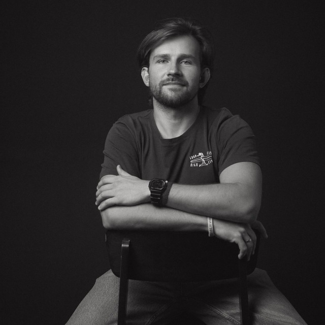

Психолог
На волне жизни с ACT
Помогаю справиться с тревогой, стрессом, выгоранием и вернуть контакт с тем, что важно
Записаться на консультациюПодход
ACT — это научно обоснованный подход, в котором мы учимся не бороться с трудными мыслями и чувствами, а принимать их без сопротивления — и при этом двигаться в сторону того, что по-настоящему важно. Не счастье как отсутствие боли, а жизнь, наполненная смыслом — даже в шторм.
Учимся замечать мысли и эмоции без борьбы с ними. Принятие — не согласие с болью, а свобода от изнурительной войны с собой.
Возвращаемся в настоящий момент — туда, где реально происходит жизнь. Без автопилота, без захвата прошлым и тревогой о будущем.
Определяем, что по-настоящему важно для вас. Действуем в соответствии с этим — даже когда внутри шторм.

Обо мне
Я работаю с людьми, которые устали воевать с собой. С тревогой, которая не даёт спать. С мыслями, которые крутятся по кругу и вытягивают силы. С апатией и ощущением, что жизнь идёт мимо. С хроническим стрессом и выгоранием, когда ресурсов почти не осталось. С кризисами — в отношениях, работе, здоровье, — когда старые опоры перестали работать. С потерей смысла и вопросом «а зачем всё это». С самокритикой, перфекционизмом и виной, которые съедают изнутри.
В ACT мы не пытаемся выключить эти состояния — с ними бесполезно бороться. Мы учимся видеть их со стороны, не сливаться с ними и не жить по их правилам. И одновременно возвращаем контакт с тем, что для вас по-настоящему важно — чтобы жизнь снова стала вашей, даже когда внутри неспокойно.
Образование и квалификации
Смежный опыт
Психология — мой главный язык. Но жизнь учила меня говорить и на других. Каждый из этих опытов привёл меня сюда — и живёт в том, как я работаю.
CrossFit Level 2, специализации по гимнастике, тяжёлой атлетике и работе с атлетами с ограничениями. Тело и психика неразделимы.
Философия серфинга органично ложится на все жизненные процессы. Опыт катания очень помогает мне в жизни и в терапии.
Запись
Всё, что вы расскажете, останется между нами. Работаю в рамках этического кодекса психолога.
Напишите в Telegram — начнём с бесплатной 20-минутной встречи
Напишите мне